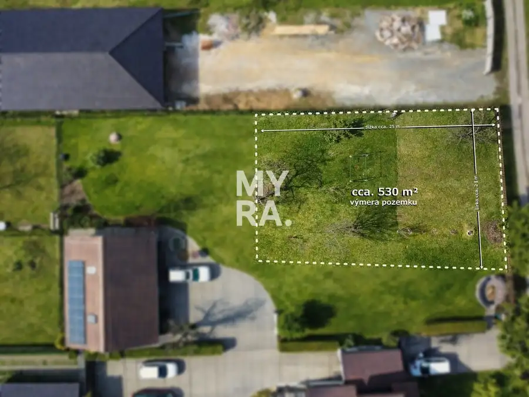
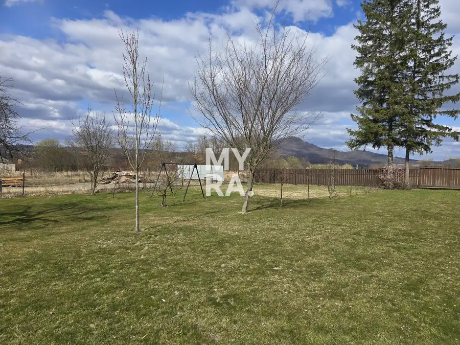
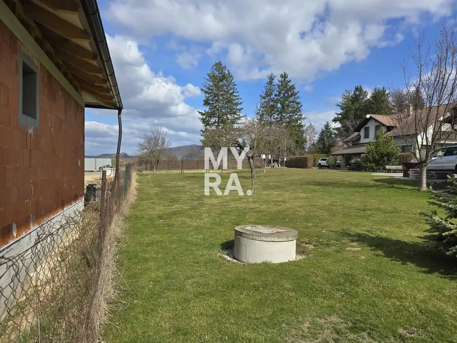
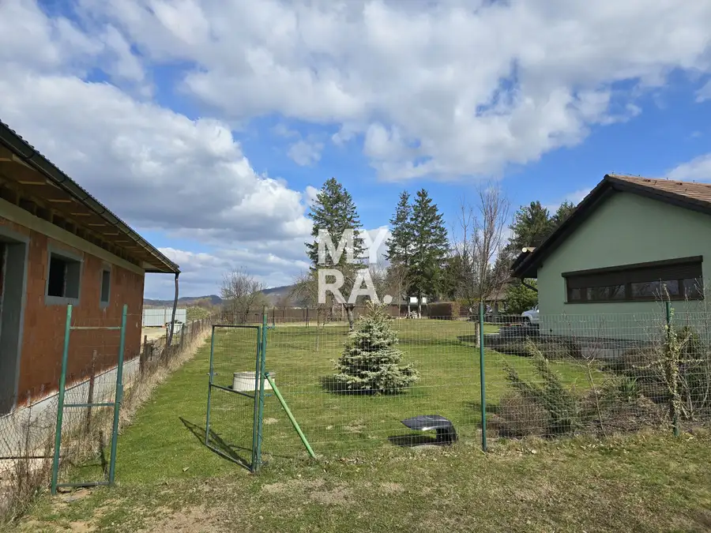
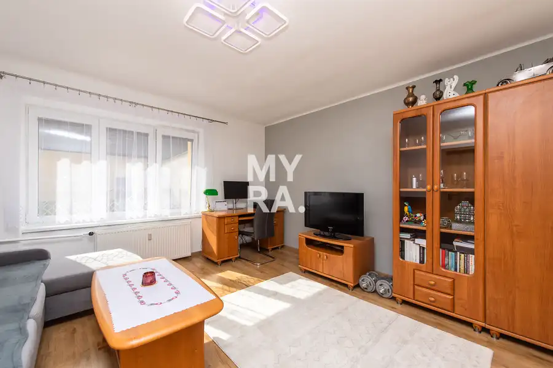
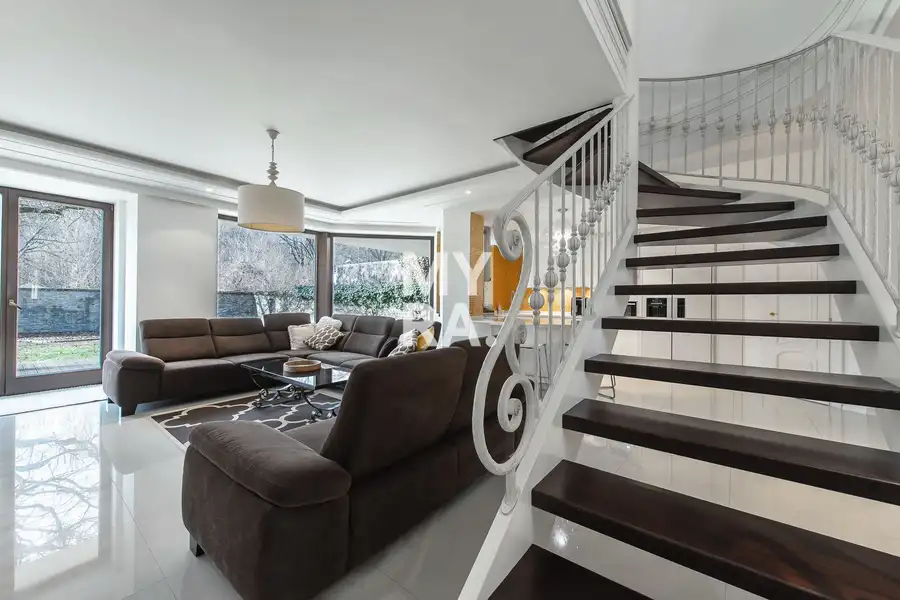
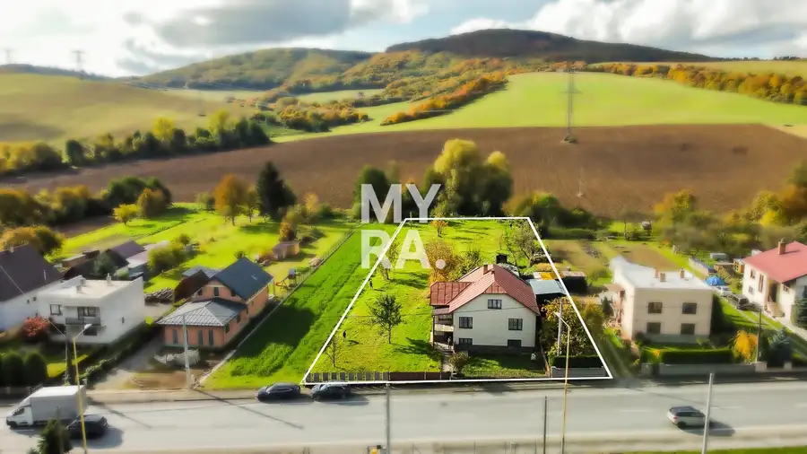

PREDAJ / Pozemok na výstavbu domu – Nižná Šebastová, Prešov
Prešov




- Plocha520 m²
- VlastníctvoOsobné
O nehnuteľnosti
Ponúkame na predaj pozemok vhodný na výstavbu rodinného domu v tichej a vyhľadávanej lokalite Nižná Šebastová – Prešov, mimo hlavnej cesty, s výbornou dostupnosťou do mesta.Pozemok je aktuálne súčasťou väčšej udržiavanej záhrady vo vlastníctve predávajúceho. Predmetom predaja bude novovytvorený pozemok s predpokladanou výmerou približne 520 m². Presná výmera bude určená geometrickým plánom.Základné informáciepredpokladaná výmera: cca 520 m²orientačné rozmery: cca 21 m × 25 mrovinatý terénintravilán obcepozemok je vhodný na výstavbu rodinného domumožnosť úpravy alebo rozšírenia výmery po dohode s majiteľomInžinierske sieteNa pozemku sú k dispozícii kompletné inžinierske siete:elektrinavodakanalizáciaplynoptický internetPrístupPrístup k pozemku bude právne zabezpečený formou vecného bremena – práva prechodu a prejazdu cez pozemok vo vlastníctve predávajúceho.Okrem toho je možný aj praktický prístup zo zadnej strany po existujúcej komunikácii, ktorá je v lokalite bežne využívaná ako prístupová cesta.Výhody pozemkukompletné inžinierske siete priamo na pozemkuoptický internetpokojná lokalita mimo hlavného ruchudobrá dostupnosť na Vranovskú / Fintickú ulicuudržiavaný stav pozemku – aktuálne využívaný ako záhradamožnosť dohody na finálnej výmere pozemkuvhodné pre rodinný dom so záhradou a súkromímPozemok je dlhodobo udržiavaný a aktuálne slúži ako súkromná záhrada majiteľa. Upravený trávnik, vzrastlá zeleň a príjemná atmosféra vytvárajú ideálne miesto pre budúce bývanie.Vďaka svojej polohe, dostupnosti inžinierskych sietí a charakteru lokality ide o zaujímavú ponuku pre klienta, ktorý hľadá pokojné bývanie s vlastným priestorom, no zároveň s rýchlou dostupnosťou do mesta.Cena 85 800 €Pri predpokladanej výmere cca 520 m² predstavuje orientačnú cenu 165 € za m².Konečná cena bude určená podľa skutočnej výmery stanovenej geometrickým plánom.Rád Vám pozemok osobne predstavím a vysvetlím všetky detaily vrátane prístupu, výmery a právneho riešenia.KontaktIng. Martin Pončák – MYRA+421 903 433 337martin.poncak@myrapoint.skwww.myrapoint.sk
Parametre
- Druh
- Pozemok pre rodinné domy
- Dátum zverejnenia
- 23. 03. 2026
- Dĺžka pozemku
- 25
- Elektrina
- Na pozemku
- Odpadové vody
- Na pozemku - Kanalizácia
- Plocha pozemku
- 520 m²
- Plyn
- Na pozemku
- Terén pozemku
- Rovinatý
- Typ
- Predaj
- Vlastníctvo
- Osobné
- Voda
- Na pozemku
- Územie
- Intravilán
- Šírka pozemku
- 21
Kde to je


Mohlo by Vás zaujímať

BytNové 165 000 €Priestranný 2-izbový byt 55 m² s veľkou pivnicou – Štúrova, Prešov Prešov 2-izbový55 m²
DomNové Cena na vyžádáníRodinná vila v rezidenčnej lokalite Botanická, Prešov Prešov 234 m²
DomNové Cena na vyžádáníRodinný dom s rovinatým pozemkom 2970 m² - Lúčka, okres Svidník Lúčka 135 m²